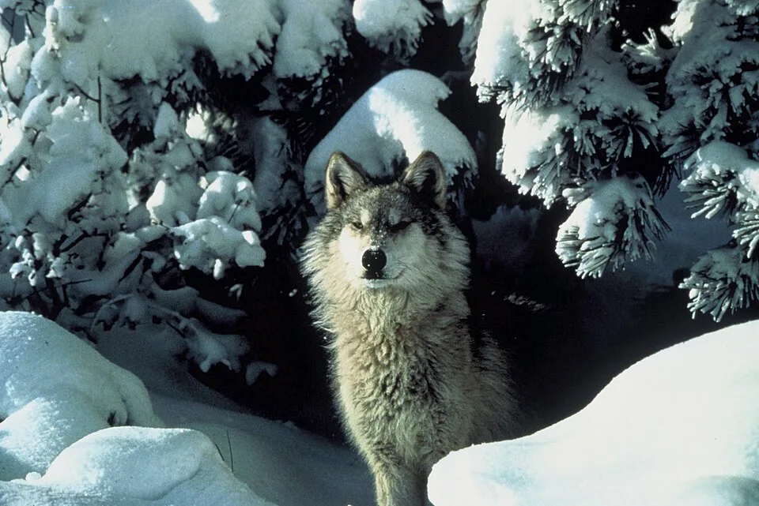
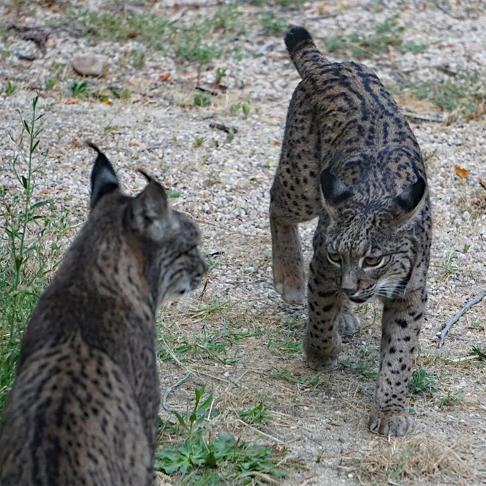
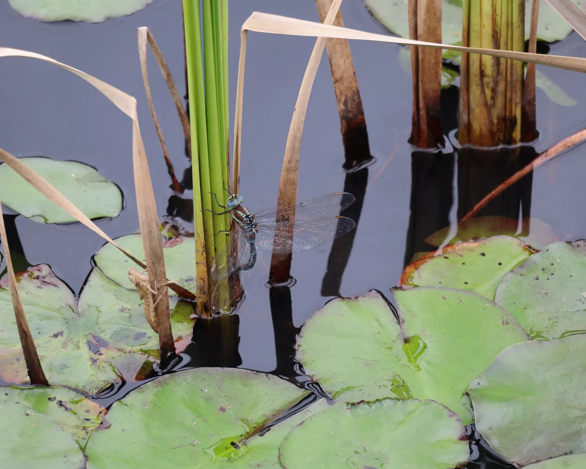

Portfolio universitaire · 2026–2027
Elías
Montesinos Ruiz.
L3 Sciences de la Vie · Parcours SEGE
Université de Toulon
Comprendre les animaux, leurs comportements et leurs liens avec leur milieu : c’est ce qui me conduit vers l’écologie de terrain et le suivi des espèces.
Ici, je raconte ce que mes projets m’ont appris : chercher, observer, parfois recommencer, et comprendre un peu mieux ce que j’ai sous les yeux.

Ce qui guide mon parcours
Apprendre à observer.
Prendre le temps de comprendre.
La faune sauvage m’intéresse particulièrement : les mammifères, dont les loups et les lynx, mais aussi les reptiles. Je souhaite poursuivre vers un master en lien avec l’écologie et la conservation, et développer ma pratique du terrain. Les travaux présentés ici montrent mes points d’appui et ce que je dois encore améliorer.
Les outils qui accompagnent mes travaux

Faune sauvage
Observer avant de comprendre.
Le regard que je porte sur les animaux nourrit mes questions en écologie. Ces photographies illustrent cet intérêt ; elles ne documentent pas mes sorties de terrain.

